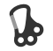

Shape
| Shape | Description | Comments | |
|---|---|---|---|
 | oval | classic symmetrical oval | A classic shape easily formed with simple tooling. Still in use because the symmetrical shape reduces shifting under load. |
 | D | symmetrical trapezoid D shape | Compared to the oval shape, D shaped carabiners shift the load away from the gate, permitting lighter carabiners for the same strength rating (or stronger carabiners for the same weight). |
 | asymmetric D | a D-shaped carabiner with one end larger than the other | By shrinking the hinge end the D shape is lightened further with little impact on usability. Conversely, for the same weight the gate opening is larger than a symmetrical D shaped carabiner. |
| swept spine | spine forms a bend arcing away from the gate side | Swept shape is easier to grip than a straight spine, but can reduce gate opening or increase weight depending on design. Omega Pacific JC Light | |
 | bent spine | asymmetric D with a single bend in the spine | Creates a larger gate opening and basket than an asymmetric D. Can be easier to clip one-handed when used on a rock climbing quickdraw or similar. Example: Black Diamond Dynotron |
| S-spine | two reversing bends in the spine, forming an S-shape | Similar features to a basic bent spine, but the s shape can be easier to hold, especially for large carabiners such as the: Petzl Vertigo. | |
 | HMS | trianglar, or slightly swept-spine asymmetric D shaped carabiner with large enough basket for a Munter hitch | A large basket permits easy use with a Munter Hitch (Halbmastwurfsicherung in German) Petzl Attache |
 | hourglass | 8-shaped carabiner with narrow waist | An evolution of the HMS carabiner with a restricted small end of the carabiner to encourage proper loading of the carabiner. Often present with an additional anti-crossloading feature. Example: Black Diamond Gridlock |
|  | other | - | for everything else |
Profile
| Style | Description | |
|---|---|---|
| round | formed from round rod stock | |
| flat | formed from round rod stock, flattened into an oval cross-section | |
 | trapezoid | similar to flat forming, but tapers towards the outside/spine of the carabiner |
 | hollow-trap | trapezoid with the concave sides |
| T-beam | wide at the interior of the carabiner with a narrow spine | |
| I-Beam | thicker at either end of the profile, usually not symmetric - some carabiners have both an I-beam and hollow-trapezoid profile | |
| Webbed I-Beam | Like an I-beam, but has distinct areas where the center of the I is thinner and thicker. | |
| other | - |
Rivet Style
| Style | Description | |
|---|---|---|
| domed | smooth-edged domed shaped rivet | |
| flat spun | sharp-edged rivet spun almost flush with the gate | |
| flat-dimpled | sharped-edged with central dimple | |
| flush | riveted head (not a pin) driven flush or slightly recessed - no sharp edges as found in flat-spun rivets. May be difficult to determine with worn carabiners. | |
| recessed | pin driven beyond flush of the gate, no head | |
| domed + flat spun | combination of styles |